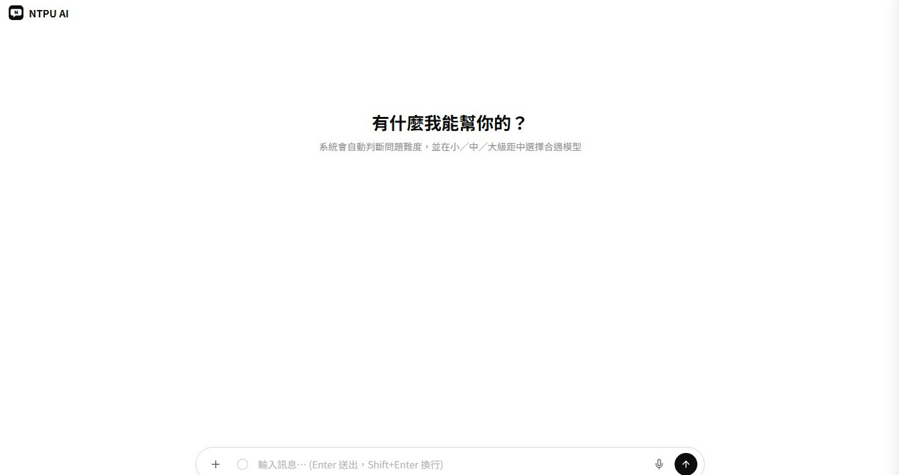

技術開發
生成式 AI、代理式 AI、影像辨識、自動化流程及智慧系統原型開發。
ABOUT
NTPU AI Aquila Project 結合資訊管理、統計與企業管理背景，協助校園與合作單位發展可實際使用的人工智慧應用。
我們不只關注模型與程式，也重視使用情境、資訊倫理、溝通品質及成果的可持續性。
SERVICES
生成式 AI、代理式 AI、影像辨識、自動化流程及智慧系統原型開發。
協助需求分析、技術選型、測試除錯、部署與成果展示。
擔任 AI 課程助教，提供實作指導、教材協作與學習問題排解。
FACULTY ADVISORS
TECHNICAL R&D TEAM
SELECTED PROJECTS

提供體育室資訊、場地與行政問題查詢的智慧校園服務。
網站建置中協助企業導入 AI 教育訓練、產業應用諮詢及數位轉型解決方案。
網站建置中COLLABORATE WITH US